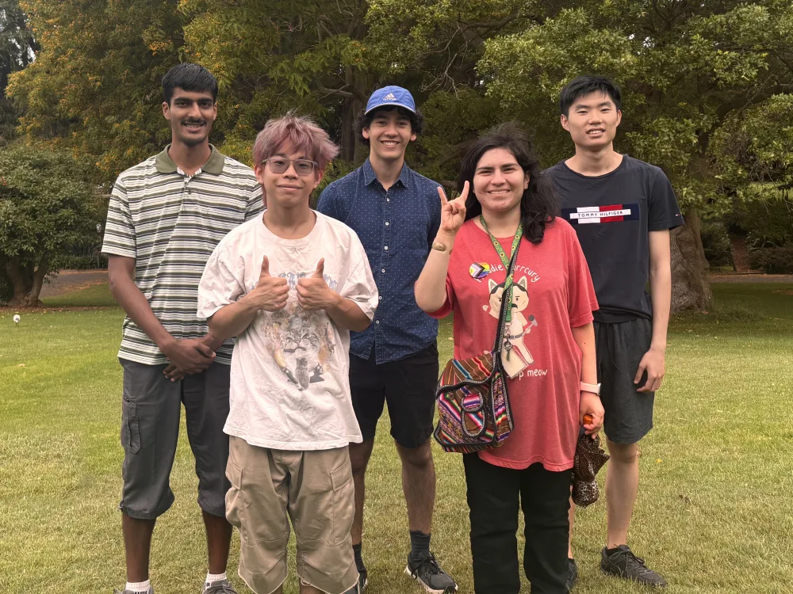
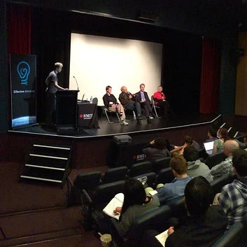

Matthew
President
Bachelor of Data Science
Interests
Music, anime, reading
One problem I care deeply about
Model welfare
Why I joined EA UNSW
I want more people to care.

A lot of people working on the world’s biggest problems first heard about EA at university. Additionally, while it’s big in the US, Effective Altruism has a comparatively lower presence in Australia. As such, we introduce UNSW students to ideas in Effective Altruism through discussion groups and our intro fellowship, as well as through more light-hearted weekly stalls.

We aim to make EA ideas accessible to curious students in a fun and engaging way through our weekly stalls, and in more depth through our intro fellowship.
We’ve noticed a lot of UNSW societies hold fundraising events without much thought put into exactly where that money goes. So, we aim to help UNSW societies, as well as the broader UNSW community, think hard about their impact on the world.
We aim to make it easier for students in Sydney to think and talk about Effective Altruism together, and to connect with the wider Effective Altruism movement. We also aim to help them work out how to act, through speaker and networking events.
To that end, 100% of sign-up grants and 60% of all other Arc grants we receive go to effective charities.
President
Bachelor of Data Science
Interests
Music, anime, reading
One problem I care deeply about
Model welfare
Why I joined EA UNSW
I want more people to care.
Vice President
Bachelor of Mathematics / Computer Science
Interests
Puzzle games, hard sci-fi
One problem I care deeply about
Farmed & wild animal suffering
Why I joined EA UNSW
I think anyone’s impact on the world is the most important part of their life, so I want to encourage people to think very deeply about what exactly they value in the world.
Welfare Officer
Bachelor of Mathematics / Engineering
Interests
Moral philosophy, tennis
One problem I care deeply about
Farmed & wild animal suffering
Why I joined EA UNSW
Learning how cheaply we can reduce large scale suffering and other major problems has changed how I live my life, and I want to share and discuss these issues with others.
Treasurer
Bachelor of Life Science
Interests
Music, science, philosophy
One problem I care deeply about
Expanding the circle of moral consideration
Why I joined EA UNSW
I wanted a good direction to point my soul in.
Secretary
Bachelor of Computer Science / Commerce
Interests
Painting, anthropology
One problem I care deeply about
Global health
Why I joined EA UNSW
I want to encourage others to pursue impactful careers and discuss EA ideas with others.
Our subcomm applications are open! It’s a great way to meet people who care about doing good, and to help shape what EA UNSW does next.
If you’re unsure about whether to apply, please err on the side of applying. We’d always love for you to help us, no matter your experience level :)